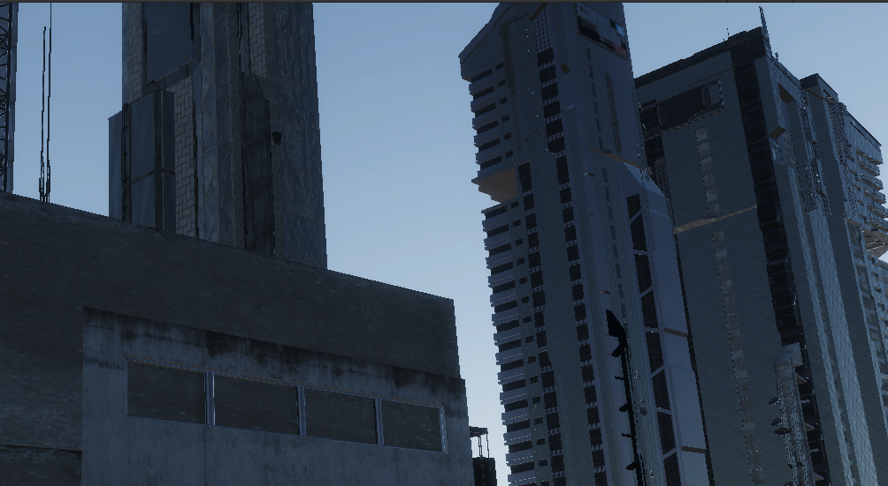
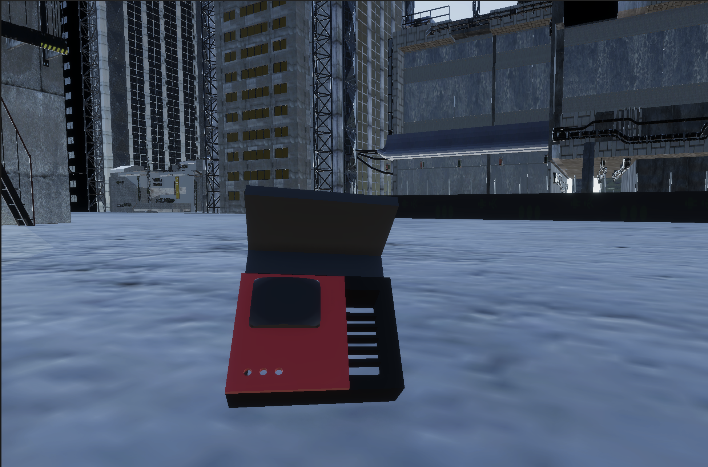
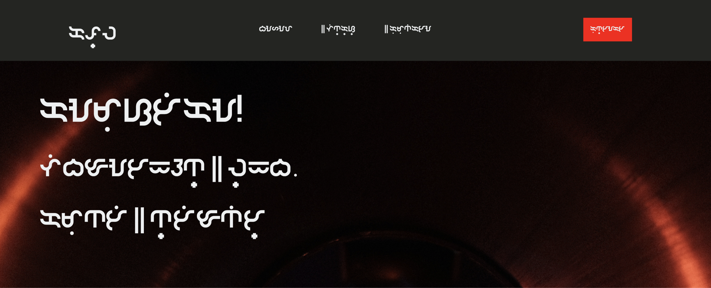

As reliance on technology companies increases both through hardware and services, communities must examine their dependance on these entities. DIY, Community projects, and the ability to spread information becomes imperative. This project hopes to demystify basic physical computing to create affordable modular tools for everyone.
The goal is build a small handheld computer that can be produced cheaply, efficiently, with an open sourced design. As much as possible we would like to utilize found or 3D printed parts. The final deliverable will entail a physical prototype, possible packaging, a working demo interface example, and an instructable card on how to build this. ** Stretch Goal: Software where the user can learn, shop, and interact on a network securely and privately.
+ In a world that is getting smaller [pandemic], as reliance on technocratic conglomerates rises, && tensions rise over social injustice; communities must examine their need to take things into their own hands. + We imagine a world in which advanced technology is commonplace in households, 3D printers are in every household like paper printers are now, and communities are gradually straying towards designing a future for themselves. + In an attempt to sever dependance on companies that will pay lip service while monitoring, dominating, and capitalizing on their most marginalized users we will try to reimagine what it is to be a creative technologist in this changing world. + Self-reliance, DIY, Community Projects are imperative to connect, educate, && to mobilize. + We will re-envision and design products to be practical, usable, and culturally diverse, and make a modest attempt to shirk the imposition of sterile Western design.
